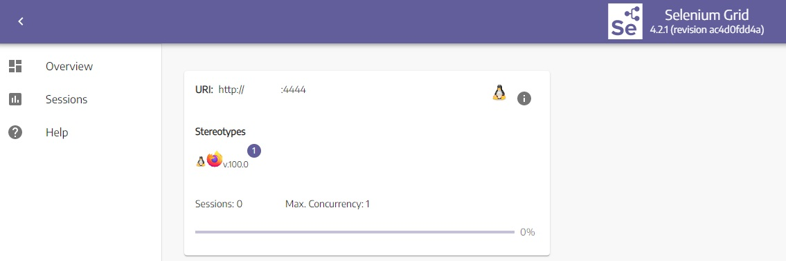
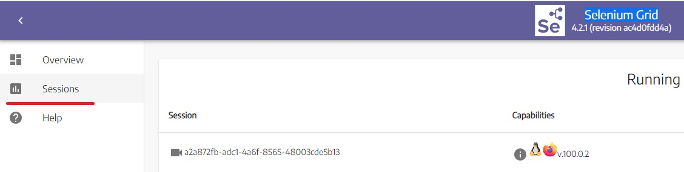
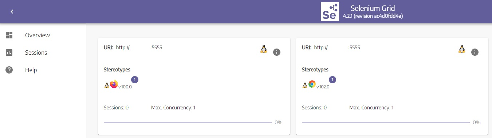
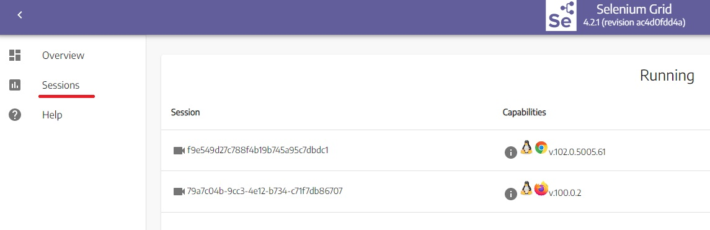

NOTE:
1. The purpose of provided code is only for running fast practical example of using Docker - Selenium
2. Sometimes you should start tests by running testng.xml file. To run it - right click on it and select "run"
3. I use IntelliJ IDEA, the project with Maven dependencies. If you want to copy pieces of code and paste them in your IDE don't forget to copy dependencies from pom.xml
4. All time Docker Desktop has to be running
My examples of code on the Github
Docker is a platform for managing containers. It's possible to "package" for example a web application with all environment and dependencies into a container and easily and simply manage it: scale, transfer and ets. For automatisation purpose Docker containers can be use to start test in parallel in different browsers or systems.
An image is a read-only template with instructions for creating a Docker container. The Docker run command creates a container from a specific image.
A container is a runnable instance of an image. You can create, start, stop, move, or delete a container.
A file with different predefined settings for not to typing all commands by hands.
My examples of code are in a package \src\test\java\docker\_1_startTestInFirefox
Download "Docker Desktop on Windows". Just double click on the downloaded file and run the installer.
For fast checking that Docker is successfully installed open terminal in Windows and run a command docker --version
Run a command in Windows terminal: docker run -d -p 4444:4444 -p 7900:7900 --shm-size="2g" selenium/standalone-firefox:4.2.1-20220531 you will see that a unique key is generated
To check container's Id run in Windows terminal docker ps
Open in browser http://localhost:4444 You should see one Firefox container is created.

Just run "main" method:
public class OneTestInFirefox {
public static void main(String[] args) throws MalformedURLException, InterruptedException {
FirefoxOptions options = new FirefoxOptions();
WebDriver driver = new RemoteWebDriver(new URL("http://localhost:4444/"), options);
driver.get("https://google.com");
driver.findElement(By.id("input")).sendKeys("Hello World!");
Thread.sleep(5000); //this is added to watch test execution on UI
driver.quit();
}
}
After start the test, a session for Firefox is created. You can watch it on UI http://localhost:4444/ui#/sessions. You can see it only while test is running and you might need to update the page.

Go to http://localhost:7900 and connect with a password "secret". Start the test. You will see how browser Firefox is opened and code from the test is executed. You can see it only while test is executing. For longer execution I added Thread.sleep(5000).
NOTE: Test execution can be seen only if container starts including "-p 7900:7900" docker run -d -p 4444:4444 -p 7900:7900 --shm-size="2g" selenium/standalone-firefox:4.2.1-20220531
To stop container use: docker stop put_here_id
My examples of code are in a package \src\test\java\docker\_2_startTestInTwoBrowsers
In Windows terminal run commands:
Create grid:
docker network create grid
docker run -d -p 4442-4444:4442-4444 --net grid --name selenium-hub selenium/hub:4.2.1-20220531
Start Chrome container:
docker run -d --net grid -e SE_EVENT_BUS_HOST=selenium-hub --shm-size="2g" -e SE_EVENT_BUS_PUBLISH_PORT=4442 -e SE_EVENT_BUS_SUBSCRIBE_PORT=4443 selenium/node-chrome:4.2.1-20220531
Start Firefox container:
docker run -d --net grid -e SE_EVENT_BUS_HOST=selenium-hub --shm-size="2g" -e SE_EVENT_BUS_PUBLISH_PORT=4442 -e SE_EVENT_BUS_SUBSCRIBE_PORT=4443 selenium/node-firefox:4.2.1-20220531
Now you can see on http://localhost:4444/ui that 2 containers are running

This time you need run a testng.xml file, just right click on the file and select "run".
This time 2 sessions are created, one for Firefox and one for Chrome. The method from the class is executed in two different browsers at a time.

Get to know ids by command docker ps
Stop nodes and hub run docker stop put_here_id
Remove the grid network run docker network rm grid
My examples of code are in a package \src\test\java\docker\_3_DockerCompose
Copy the docker-compose-v3.yml file Version 3 from https://github.com/SeleniumHQ/docker-selenium#docker-compose, open it in a text editor and save on a PC. There are settings to start browsers and a selenium-hub, so you don't need to run separate command in Windows terminal anymore. I deleted settings for Edge browser and saved .yml file in the project \src\test\java\docker\_3_DockerCompose\docker-compose-v3.yml
In a Windows terminal go to a folder where you saved the docker-compose-v3.yml file and run docker-compose -f docker-compose-v3.yml up
Start tests by runnin testng.xml and watch creation of sessions in the same way as earlier http://localhost:4444/ui#/sessions. Again 2 sessions are created, one for Firefox and one for Chrome.
in Windows terminal:
Run Ctrl + c
Run docker-compose -f docker-compose-v3.yml down
My examples of code are in a package \src\test\java\docker\_3_DockerCompose
Here you should do almost the same steps, that you did in a previous section, but only with 2 differences: 1) Add "--scale chrome=5 -d" when starting hub and nodes 2) Run another testng file with the name "testngRun5tests.xml".
You don't need to modify .yml file.
In a Windows terminal go to a folder where you saved the .yml file and run docker-compose -f docker-compose-v3.yml up --scale chrome=5 -d
"--scale chrome=5 -d" means that 5 Chrome browsers will be created
To run test this time use "testngRun5tests.xml" from the package \src\test\java\docker\_3_DockerCompose . It starts the same method from the class "OneTestInTwoBrowsers", but 5 times according to settings in testngRun5tests.xml. So 5 sessions will be created in Docker and tests will be executed at the same time. Watch creation of sessions in the same way as earlier http://localhost:4444/ui#/sessions
Run Ctrl + c in Windows terminal
Run docker-compose -f docker-compose-v3.yml down
Summary:
1 – Docker is safe. Applications run safely and securely in their respective containers
2 – Containers are lightweight and contain everything needed to run the application